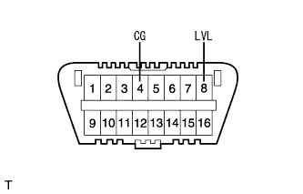

ライテイングシステム 初期化 |
参照)| 1. ヘッドランプレベリングコンピュータASSY初期化手順 |
車両状態確認
車両を以下の状態にする。
ウォーニング表示確認(*1)
イグニッションスイッチをOFF→ONにして、ウォーニング表示を確認する。
初期化操作
|  |
SST(ダイアグノーシスチェックワイヤNo.2)を使用して、DLC3コネクターの8(LVL)端子←→4(CG)端子間を短絡させる。
 |
DLC3コネクターの端子を短絡後20秒以内にヘッドランプディマスイッチをHEAD→OFF操作を左図に示す燃料計の残量に応じた回数を操作する。(*2)
ウォーニング表示を確認する。
| 作業内容 | ウォーニング表示 |
|---|---|
| ヘッドランプレベリングコンピュータASSY交換(新品) | 2Hzの6回点滅(間隔1.25秒)をIG OFFするまで継続→2HzのN回点滅(間隔1.25秒)(Nは、ヘッドランプディマスイッチ操作回数)をIG OFFするまで継続(初期化正常終了) |
| ヘッドランプレベリングコンピュータASSY脱着、ハイトコントロールセンサ交換·脱着、サスペンション交換など | 点滅なし(初期化データ有効時)または、2Hzの6回点滅(間隔1.25秒)をIG OFFするまで継続(初期化データ無効時)→2HzのN回点滅(間隔1.25秒)をIG OFFまで継続(初期化正常終了) |